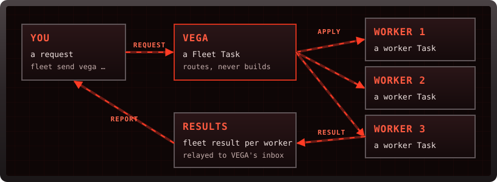

Every session is a Fleet Task, so a recipe is a script or a Task over Fleet's command line. Everything it starts shows up in your running Thurbox within a tick.
VEGA is a mission control Task. You give it a request; it splits the work and applies one worker Task per piece, each in a workspace of its own. It never does the work itself. Fleet relays each worker's questions and result back to VEGA, and VEGA tells you what is dispatched, what is done and what needs you.

VEGA needs Fleet v3 (Thurbox's installer, or install.sh --fleet-only),
jq, and a coding-agent CLI on PATH that is logged in. Its v3 installer
is on the
v3-install
branch until it merges.
git clone -b v3-install https://github.com/Thurbeen/vega
cd vega
./install.sh # optional: --harness NAME, --config PATH
On Windows (PowerShell 7) it is ./install.ps1, with -Harness and
-Config. The installer can run again safely: it runs fleet init only
when there is no config, picks the first agent on PATH, and applies the Task
vega over the clone's workspace/. Claude Code asks once whether to
trust that folder; answer in VEGA's session. git pull updates it, and
./install.sh --uninstall (-Uninstall) deletes the Task
vega, leaving its workers and the clone.
fleet send vega "Add a dark mode to the website, and open a draft PR"
fleet list task # VEGA, and the workers it applied
fleet status task vega --json # its state
In Thurbox, VEGA is the session vega: select it and type, and its workers appear in
the list as they start. Thurbox runs fleet up for you; with Fleet alone, run it
yourself.
One interactive Task per package, each in a git worktree of its own on a branch of its own, each
sent its part of the work. Each Task names the repository as a git+file URL, and the
runtime makes its worktree. The Task's thurbox.dev/name label is the name the session
list shows.
#!/usr/bin/env bash
set -euo pipefail
repo=/home/me/code/mono
for pkg in api web worker; do
printf '{"apiVersion":"fleet/v1alpha1","kind":"Task",
"metadata":{"name":"%s","labels":{"thurbox.dev/name":"%s"}},
"spec":{"harness":"claude",
"workspace":["git+file://%s?branch=%s"],
"dispatch":true}}' \
"$pkg" "$pkg" "$repo" "$pkg" | fleet apply --create-only -f -
fleet send "$pkg" "work only in packages/$pkg: run its tests and fix what fails"
done
fleet list task
fleet send queues each message, and Fleet delivers it once the agent is ready.
fleet delete task <name> ends a session and removes its worktree. Its branch
stays, and uncommitted work is kept under refs/fleet/preserved/ for 30 days.